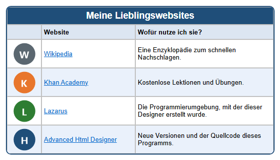

Lernpfad › Lektion 6
Hyperlinks

Was ist ein Hyperlink?
Ein Hyperlink (kurz Link) ist ein Text oder ein Bild, auf das man klicken kann. Hinter dem Link steht eine
Adresse (URL), zum Beispiel https://de.wikipedia.org. Im Browser ist ein Textlink meist blau und
unterstrichen.
Zwei Arten von Links
- Text-Hyperlink: Klicken Sie auf die Zelle und auf der Registerkarte
 Zelle (C) auf
Zelle (C) auf
 TH+. Sie bekommen zwei Fragen: zuerst die
Adresse (URL), dann den Text, der als Link erscheint (standardmäßig der Text, der schon in der Zelle steht).
Mit
TH+. Sie bekommen zwei Fragen: zuerst die
Adresse (URL), dann den Text, der als Link erscheint (standardmäßig der Text, der schon in der Zelle steht).
Mit  TH- entfernen Sie den Link wieder; der Text bleibt stehen.
TH- entfernen Sie den Link wieder; der Text bleibt stehen. - Bild-Hyperlink: Klicken Sie auf eine Zelle mit einem Bild und auf
 HL+ (Bild-Hyperlink erstellen). Geben Sie die Adresse ein.
Mit
HL+ (Bild-Hyperlink erstellen). Geben Sie die Adresse ein.
Mit  HL- entfernen Sie den Link.
HL- entfernen Sie den Link.
https:// davor. Kopieren
Sie sie am besten aus der Adressleiste Ihres Browsers, dann machen Sie keine Tippfehler.So machen Sie es selbst
- Erstellen Sie eine Tabelle mit 3 Spalten und 6 Zeilen, mit einem Titel und den Überschriften Website und Wofür nutze ich sie?
- Geben Sie in die zweite Spalte die Namen der Websites ein und in die dritte, wofür Sie sie nutzen.
- Machen Sie aus jedem Namen mit TH+ einen Text-Hyperlink.
- Setzen Sie in die erste Spalte mit Bild hinzufügen einen Knopf (z. B.
knop-w.pngauslessen\afbeeldingen) und machen Sie daraus mit HL+ einen Bild-Hyperlink. - Testen Sie Ihre Links: Klicken Sie unten auf Hier klicken für Extrafunktionen, öffnen Sie den Test-Browser und klicken Sie auf jeden Link.
Hinter den Kulissen
Im HTML-Code ist ein Link ein <a>-Element. Die Adresse steht in href:
<a href="https://de.wikipedia.org">Wikipedia</a>Bei einem Bild-Hyperlink steht das <img> zwischen <a> und </a>.
Aufgabe
Fügen Sie unten eine Zeile mit einer Website hinzu, die Sie oft nutzen (zum Beispiel die Website Ihrer Schule oder Ihres Sportvereins). Machen Sie sowohl den Namen als auch den Knopf anklickbar und testen Sie den Link.
Lösung
Klicken Sie auf der Registerkarte Tabelle auf AR. Geben Sie in die neue Zeile den Namen und die Erklärung ein. Klicken Sie auf die Zelle mit dem Namen und auf TH+; fügen Sie die Adresse aus Ihrem Browser ein und bestätigen Sie den Text. Wählen Sie in der ersten Spalte mit Bild hinzufügen einen Knopf, klicken Sie auf HL+ und fügen Sie dieselbe Adresse ein. Öffnen Sie den Test-Browser und klicken Sie auf beide Links.
Arbeiten Sie unter Linux? Öffnen Sie das Beispiel dann selbst mit Tabellendesigner öffnen: Ordner
lessen/de, Datei les06-websites.htd.